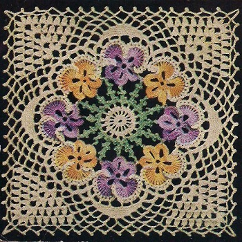

Pansy Spread Bedspread - Free Crochet Pattern MATERIALS: AMERICAN THREAD COMPANY "DELUXE" CROCHET AND KNITTING COTTON, ARTICLE 346 OR "PURITAN" BEDSPREAD COTTON, ARTICLE 40 39-250 yd. Balls Cream. 7-175 yd. Balls each of Shaded Lavenders and Shaded Yellows. 3-175 yd. Balls Green. Each Motif measures about 10 inches. 40 Motifs, 4 x 10 are required for Spread measuring 40 x 100 inches without ruffle. Steel Crochet Hook No. 8. LAVENDER PANSY: With Shaded Lavenders, ch 7, join to form a ring, ch 3, 2 dc in ring, * ch 7, 3 dc in ring, repeat from * 3 times, ch 7, join in 3rd st of ch. 2nd Row: Sl st to loop, ch 3, 7 dc in same loop, ch 4, sl st in top of dc just made for picot, work 7 more dc in same loop, sc in center dc of 3 dc group, * 8 dc in next loop, ch 4, sl st in top of dc just made for picot, work 7 more dc in same loop, sc in center dc of 3 dc group, repeat from * once (3 petals) , ch 4, 12 d tr c (3 times around hook) with ch 1 between each d tr c in next loop, ch 1, 2 tr c with ch 1 between in same loop, ch 1, 2 dc with ch 1 between in same loop, sc in center dc of next 3 dc group, 2 dc with ch 1 between in next loop, ch 1, 2 tr c with ch 1 between in same loop, ch 1, 12 d tr c with ch 1 between each d tr c in same loop, ch 4, join to base of 1st petal, break thread. YELLOW PANSY: With Shaded Yellows, work 1st row same as 1st row of Lavender Pansy. 2nd Row: Sl st to loop, ch 3, 7 dc in same loop, ch 4, sl st in top of dc just made for picot, work 7 more dc in same loop, sc in center of 3 dc group, 8 dc in next loop, ch 4, sl st in top of dc just made for picot, work 7 more dc in same loop, sc in center of 3 dc group, 8 dc in next loop, ch 2, sl st in picot of 1st petal of Lavender Pansy, ch 2, sl st in top of dc just made, work 7 more dc in same loop, complete pansy in same manner as Lavender Pansy. Work 3 more Lavender and 3 more Yellow Pansies in same manner, joining same as 1st 2 pansies, alternating Colors, joining last Yellow Pansy to 1st Lavender Pansy. Attach Cream in base of ch 4 of the 1st large petal of pansy, ch 3, skip 1 st, sc in next st of the ch 4, ch 3, sc over same ch 4 loop, * ch 3, sc in next ch 1 loop, repeat from * 14 times, * ch 3, sc in next ch 1 loop of next petal, repeat from * 14 times, ch 3, sc over ch 4 loop, ch 3, sc in 2nd st of ch, ch 3, sl st in base of ch 4, break thread. Attach Cream in same manner to 1st large petal of next Pansy, ch 3, skip 1 st, sc in next st of the ch 4, ch 3, sc over same ch 4 loop, * ch 3, sc in next ch 1 loop, repeat from * once, ch 2, sl st in corresponding ch 3 loop of 2nd petal of previous pansy, ch 2, sc in next ch 1 loop, complete pansy same as 1st pansy and continue working all pansies in same manner, joining last pansy to first pansy. CENTER JOINING MOTIF: With Cream, ch 5, join to form a ring, ch 1 and work 8 sc in ring, join. 2nd Row: Ch 8, sl st in 4th st from hook for picot, tr c in same space with ch 8, * ch 4, sl st in 4th st from hook for picot, tr c in next sc, ch 4, sl st in 4th st from hook for picot, tr c in same sc, repeat from * 6 times, ch 4, sl st in 4th st from hook for picot, join in 4th st of ch 8. 3rd Row: Ch 7, dc in next tr c, * ch 4, dc in next tr c, repeat from * 13 times, ch 4, join in 3rd st of ch 7, break thread. 4th Row: Attach Green, ch 1, ** 2 sc in mesh, ch 4, sl st in 4th st from hook for picot, 2 sc in same mesh, ch 7, sl st in 4th st from hook for picot, ch 3, join to picot of center petal of pansy, ch 7, sl st in 4th st from hook for picot, sl st in flat side of opposite picot, ch 3, sl st in top of last sc made, 2 sc, picot, 2 sc in next mesh, * ch 7, sl st in 4th st from hook for picot, repeat from * once, ch 3, join in joining between pansies, * ch 7, sl st in 4th st from hook for picot, join to opposite picot, repeat from * once, ch 3, sl st in top of last sc made, repeat from ** all around, join, break thread. Join Cream in 2nd free loop to left of joining of Lavender Pansy, ch 7, skip 1 loop, dc in next loop, * ch 4, skip loop, dc in next loop, repeat from * once, ch 4, skip 9 loops, dc in next loop of next petal, * ch 4, skip 1 loop, dc in next loop, repeat from * twice, dc in 2nd free loop of next pansy, ch 4, skip 1 loop, dc in next loop, repeat from first * all around, ending row with sl st in 3rd st of ch 7 (7 loops in each pansy) . 2nd Row: Sl st to 2nd mesh, ch 1, * work 6 sc over each of the next 7 loops, ch 5, turn work, skip 11 sc, sl st in next sc, ch 1, turn and work 7 sc over loop just made, sl st in top of last sc in previous loop, repeat from * 6 times, complete row to correspond, join. 3rd Row: Sl st to 4th sc, ch 1, ** work 1 sc in each of the next 25 sc, * ch 7, sc in center of next scallop, repeat from * twice, ch 3, tr c in center of next scallop, ch 7, tr c in same space, ch 3, sc in center of next scallop, * ch 7, sc in center of next scallop, repeat from * once, ch 7, skip 6 sc, repeat from ** twice, complete row to correspond. join. 4th Row: Sl st to 4th sc, ch 1, ** work 1 sc in each of the next 19 sc, * ch 7, sc over next loop, repeat from * twice, ch 3, skip ch 3 loop, cluster st in next loop, (cluster st: * thread over hook twice, insert in loop, pull through and work off 2 loops twice, repeat from * twice, work of 2 loops, then work off remaining 3 loops at one time) ch 3, cluster st in same space, ch 5, 2 cluster sts with ch 3 between in same space, ch 3, sc over next ch 7 loop, ch 7, sc over next ch 7 loop, ch 7, sc over next loop, ch 7, skip 3 sc, repeat from ** twice, complete row to correspond, join in 1st sc. 5th Row: Sl st to 4th sc, ch 1, ** work 1 sc in each of the next 13 sc, * ch 7, sc over next loop, repeat from * twice, * ch 3, cluster st in next loop, repeat from * once, ch 3, 2 cluster sts with ch 3 between in next loop, ch 5, 2 cluster sts with ch 3 between in same loop, * ch 3, cluster st in next loop, repeat from * once, ch 3, sc in next loop, * ch 7, sc in next loop, repeat from * once, ch 7, skip 3 sc, repeat from ** twice, complete row to correspond, join in 1st sc. 6th Row: Sl st to 4th sc, ch 1, ** work 1 sc in each of the next 7 sc, * ch 7, sc over next loop, repeat from * twice, * ch 3, cluster st in next loop, repeat from * 3 times, ch 3, 2 cluster sts with ch 3 between in next loop, ch 5, 2 cluster sts with ch 3 between in next st, * ch 3, cluster st in next st, repeat from * 3 times, ch 3, sc over next loop, * ch 7, sc over next loop, repeat from * once, ch 7, skip 3 sc, repeat from ** twice, complete row to correspond, join in 1st sc. 7th Row: Sl st to center sc, work 1 sc in same space, * ch 7, sc over next loop, repeat from * twice, * ch 3, cluster st in next loop, repeat from * 5 times, ch 3, 2 cluster sts with ch 3 between in next loop, ch 5, 2 cluster sts with ch 3 between in same loop, * ch 3, cluster st in next loop, repeat from * 5 times, ch 3, sc over next loop, * ch 7, sc over next loop, repeat from * once, ch 7, skip 3 sc, sc in next sc, repeat from first * and complete row to correspond, join in sc. 8th Row: Sl st to center of loop, sc in same loop, * ch 7, sl st in 4th st from hook for picot, ch 3 (picot loop) , sc in next loop, repeat from * twice, * picot loop, skip next ch 3 loop, sc in next loop, repeat from * 3 times, ch 11, sc in same loop, * picot loop, skip next ch 3 loop, sc in next loop, repeat from * 3 times, * picot loop, sc in next loop, repeat from * 3 times, repeat from 1st * twice, complete row to correspond, break thread. Work a second motif joining it to 1st motif in the last row as follows: sl st to center of loop, sc in same loop, * ch 7, sl st in 4th st from hook for picot, ch 3 (picot loop) , sc in next loop, repeat from * twice, * picot loop, skip next ch 3 loop, sc in next loop, repeat from * 3 times, ch 5, sl st in center st of corner loop of 1st motif, ch 5, sc in same space of 2nd motif, * ch 5, sl st in corresponding picot of 1st motif, ch 2, complete picot, ch 3, skip next ch 3 loop, sc in next loop of 2nd motif, repeat from * 3 times, ch 5, sl st in corresponding picot of 1st motif, ch 2, complete picot, ch 3, sc in next loop of 2nd motif, repeat from * 6 times, * ch 5, sl st in corresponding picot of 1st motif, ch 2, complete picot, ch 3, skip next ch 3 loop, sc in next loop of 2nd motif, repeat from * 3 times, ch 5, sl st in center st of corner loop of 1st motif, ch 5, sc in same loop of 2nd motif, complete motif same as 1st motif. Join the 3rd motif to 2nd motif and 4th motif to 1st and 3rd motifs in same manner. Work 36 more motifs joining in same manner. With right side of work toward you, attach Cream in joining before corner, * ch 7, sl st in next picot, repeat from * 14 times, ch 7, sl st in 6th st of corner loop, ** ch 7, sl st in next picot, * ch 7, sl st in next picot, repeat from * 13 times, ch 7, sl st in joining st of next motifs, repeat from ** all around working all corners same as 1st corner, ending row to correspond. RUFFLE BAND: With Cream, ch 11, dc in 8th st from hook, ch 2, skip 2 sts of ch, dc in next st, * ch 5, turn, dc in dc, ch 2, dc in 3rd st of ch, repeat from * until band measures 41 inches for end ruffle. Working across sides of meshes, work * 2 sc in one mesh, 3 sc in next mesh, repeat from * on both long sides of band, do not break thread. 1st Row of Ruffle. Ch 9, skip 1 sc, tr c in next sc, * ch 5, skip 1 sc, tr c in next sc, repeat from * across row having a multiple of 7 meshes, ch 12, turn. 2nd Row: Sc in 1st mesh, * ch 8, sc in next mesh, repeat from * across row, ch 12, turn and work 15 more rows of ch 8 loops, ch 12, turn. 18th Row: Work 3 loops, ch 4, 3 tr c cluster st in next loop, ch 5, 3 tr c cluster st in same loop, ch 4, sc in next loop, * work 5-ch 8 loops, ch 4, 3 tr c cluster st in next loop, ch 5, 3 tr c cluster st in same loop, ch 4, sc in next loop, repeat from * across row ending row with 2-ch 8 loops, ch 12, turn. 19th Row: Work 2 loops, ch 4 and work 4 cluster sts with ch 5 between each cluster st in loop between next 2 cluster sts, ch 4, sc in next ch 8 loop, * work 4-ch 8 loops, ch 4, 4 cluster sts with ch 5 between each cluster st in loop between next 2 cluster sts, ch 4, sc in next ch 8 loop, repeat from * across row ending with 2-ch 8 loops, ch 12, turn. 20th Row: Work 2 loops, ch 4, skip 1 loop, 2 cluster sts with ch 5 between cluster sts in each of the next 3 loops, ch 4, sc in next ch 8 loop, * work 3-ch 8 loops, ch 4, skip 1 loop, 2 cluster sts with ch 5 between cluster sts in each of the next 3 loops, ch 4, sc in next ch 8 loop, repeat from * across row ending with 1 loop, ch 12, turn. 21st Row: Work 1 loop, ch 4, skip 1 loop, 2 cluster sts with ch 5 between cluster sts in each of the next 5 loops, ch 4, sc in next ch 8 loop, * work 2-ch 8 loops, ch 4, skip 1 loop, 2 cluster sts with ch 5 between cluster sts in each of the next 5 loops, ch 4, sc in next ch 8 loop, repeat from * across row ending with 1 loop, ch 12, turn. 22nd Row: Work 1 loop, * ch 4, skip 1 loop, 1 cluster st with ch 5 between cluster sts in each of the next 4 loops, ch 5, 2 cluster sts with ch 5 between in next loop, ch 5, 1 cluster st with ch 5 between cluster sts in each of the next 4 loops, ch 4, sc in next ch 8 loop, ch 4, sc in next loop, repeat from * across row ending row with ch 4, sc in last loop. 23rd Row: * Ch 7, sl st in 4th st from hook for picot, ch 3, (picot loop) sc in next loop, repeat from * 10 times, picot loop, skip next loop, sc in next loop and continue picot loops across row, break thread. HEADING: Join Cream in 1st sc, ch 5, work 1 tr c with ch 1 between each tr c in each sc across row, ch 4, turn. 2nd Row: Sl st over ch 1 loop, * ch 4, sl st over next ch 1 loop, repeat from * across row, break thread. Work 2 more ruffles in same manner having each band 101 inches in length. Sew ruffle in position overcasting the center of band to outside edges of top section.  HOME |